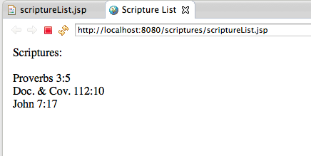
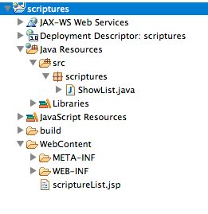
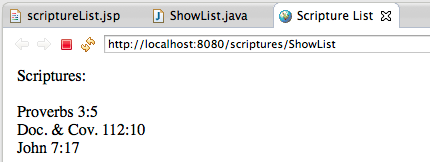

PART ONE - EXAMPLE: SCRIPTURE APPLICATION (STARTING THE VIEW AND THE CONTROLLER)
OBJECTIVE
The the basics of Servlet / JSP Interaction.
EXAMPLE
Let's consider that we are to build a simple application to keep a list of scriptures. This application will accept a new scripture to be added to the list, and all the scriptures in the list can be displayed.
INSTRUCTIONS:
1. Create Project in Eclipse
- First, we start by creating a dynamic web application in Eclipse.
- File->New->Dynamic Web Project
- Type in the name "scriptures", make sure Tomcat v.7 is selected as the target runtime.
2. Create first JSP
Let's start by creating a simple JSP that can display the list of scriptures. Expand the scriptures project, right-click the WebContent folder, and select New -> JSP File. Choose a name such as "scriptureList.jsp", and select finish.
Change the title to "Scripture List" and add the following into the body:
<div>
Scriptures:<br /><br />
Proverbs 3:5<br />
Doc. & Cov. 112:10<br />
John 7:17<br />
</div>
The complete page should be:
<%@ page language="java" contentType="text/html; charset=ISO-8859-1"
pageEncoding="ISO-8859-1"%>
<!DOCTYPE html PUBLIC "-//W3C//DTD HTML 4.01 Transitional//EN"
"http://www.w3.org/TR/html4/loose.dtd">
<html>
<head>
<meta http-equiv="Content-Type" content="text/html; charset=ISO-8859-1">
<title>Scripture List</title>
</head>
<body>
<div>
Scriptures:<br /><br />
Proverbs 3:5<br />
Doc. & Cov. 112:10<br />
John 7:17<br />
</div>
</body>
</html>
We can now click the green play button in Eclipse to start up the Tomcat service and display our simple webpage.
3. Introduce Scriptlets
While this page now displays the three scriptures, it is certainly not dynamic in any way. We can now change the page to use scriptures, which allows us to put Java code directly into the page in between <% and %> tags as follows:
In the body of the page, we can now introduce Java code, to create a new ArrayList of Strings and add our scriptures to the list.
<%
List<String> scriptures = new ArrayList<String>();
scriptures.add("Proverbs 3:5");
scriptures.add("Doc. & Cov. 112:10");
scriptures.add("John 7:17");
%>
This will require us to import List and ArrayList at the top of our JSP:
<%@ page import="java.util.List" %>
<%@ page import="java.util.ArrayList" %>
Then we can iterate through each scripture in the list and
<%
for (String scripture : scriptures) {
out.println(scripture + "<br />");
}
%>
The complete source of the JSP now looks as follows:
<%@ page language="java" contentType="text/html; charset=ISO-8859-1"
pageEncoding="ISO-8859-1"%>
<%@ page import="java.util.List" %>
<%@ page import="java.util.ArrayList" %>
<!DOCTYPE html PUBLIC "-//W3C//DTD HTML 4.01 Transitional//EN"
"http://www.w3.org/TR/html4/loose.dtd">
<html>
<head>
<meta http-equiv="Content-Type" content="text/html; charset=ISO-8859-1">
<title>Scripture List</title>
</head>
<body>
<%
List<String> scriptures = new ArrayList<String();
scriptures.add("Proverbs 3:5");
scriptures.add("Doc. & Cov. 112:10");
scriptures.add("John 7:17");
%>
<div>
Scriptures:<br /><br />
<%
for (String scripture : scriptures){
out.println(scripture + "<br />");
}
%>
</div>
</body>
</html>
This is NOT the best way to do some of these tasks, as we will see through the completion of this tutorial, but it will put the scriptures into the list, and then iterate through the list, displaying them one at a time to the screen. Clicking the green play button in Eclipse will show the page in the browser and produce the exact same page as before, but this time it is dynamically generated.
4. Generate the list in a servlet
We obviously don't want to hard-code the scriptures into the JSP page, but want to instead get them from the server (ultimately from a database or the file system, etc.). Also, in following the MVC design pattern, we want our JSP to serve as the View component, and handle as little of the business logic as possible.
To accomplish this, we can create a servlet, have it set up the list, and then have it transfer control to the JSP to render the list.
In Eclipse, right click the project and select New -> Servlet. Then type a package name, such as "scriptures" and a class name, such as "ShowList", and click finish. This creates a new java class shown under Java Resources -> src -> scriptures -> ShowList.java
Before the declaration of the new servlet class, notice the annoation: @WebServlet("/ShowList"). This means that our servlet will be invoked for URLs matching "ShowList".
Because this page is a type of query (not causing side effects), we want to use the GET method, and therefore can delete the auto-generated "doPost" method, and put our code in the "doGet" method. We can cut and paste the code to generate the list from the JSP to put it in this method (of course, this also requires importing List and ArrayList at the top of the file):
List<String> scriptures = new ArrayList<String>();
scriptures.add("Proverbs 3:5");
scriptures.add("Doc. & Cov. 112:10");
scriptures.add("John 7:17");
But we then need a way to pass this list to the JSP. We first put it on the request object:
request.setAttribute("scriptures", scriptures);
And then tell the server to transfer control to the JSP, passing it our current request and response:
request.getRequestDispatcher("scriptureList.jsp").forward(request, response);
The complete servlet file looks as follows:
package scriptures;
import java.io.IOException;
import java.util.ArrayList;
import java.util.List;
import javax.servlet.ServletException;
import javax.servlet.annotation.WebServlet;
import javax.servlet.http.HttpServlet;
import javax.servlet.http.HttpServletRequest;
import javax.servlet.http.HttpServletResponse;
/**
* Servlet implementation class ShowList
*/
@WebServlet("/ShowList")
public class ShowList extends HttpServlet {
private static final long serialVersionUID = 1L;
/**
* @see HttpServlet#HttpServlet()
*/
public ShowList() {
super();
// TODO Auto-generated constructor stub
}
/**
* @see HttpServlet#doGet(HttpServletRequest request, HttpServletResponse response)
*/
protected void doGet(HttpServletRequest request, HttpServletResponse response) throws ServletException, IOException {
List<String> scriptures = new ArrayList<String>();
scriptures.add("Proverbs 3:5");
scriptures.add("Doc. & Cov. 112:10");
scriptures.add("John 7:17");
request.setAttribute("scriptures", scriptures);
request.getRequestDispatcher("scriptureList.jsp").forward(request,response);
}
}
We can now update the JSP to get the scripture list from the request and output it. We first remove the scriptlet that created the list (because it is now in the servlet code), and change the loop to get the list from the request attributes:
<%
for (String scripture : (List<String>)request.getAttribute("scriptures")) {
out.println(scripture + "<br />");
}
%>
We can now run the servlet, by selecting it (ShowList.java) and clicking the play button.
Notice that the URL says "ShowList" rather than "scriptureList.jsp". The client is not aware that we transferred control to the JSP to render the page, but rather just sees this as a request to the ShowList servlet.
5. Using JSTL
As we have discussed, in the MVC design pattern, we want the JSP to serve as our View, and we want to avoid logic as much as possible in it. In this regard, while scriptlets are allowed, their use is highly discourage, because we are now mixing direct Java code with our presentation. The preferred approach is to instead use the JSTL (or JSF components, but we aren't going to introduce them yet).
Because the JSTL is not included by default in Tomcat or GlassFish, we need to download the jstl-1-2.jar file and put it in our WEB-INF/lib folder. Or, if you are using Maven, you can specify the dependency in your pom.xml file as follows:
<dependency>
<groupId>javax.servlet</groupId>
<artifactId>jstl</artifactId>
<version>1.2</version>
</dependency>
Then in our JSP, we include the following at the top to use the core tag library:
<%@ taglib uri="http://java.sun.com/jsp/jstl/core" prefix="c" %>
We can then replace our scriptlet with the following:
<c:forEach var="scripture" items="${scriptures}">
${scripture}<br />
</c:forEach>
Notice that we are using the forEach tag from the core library, and we are using the EL syntax for both the request attribute (${scriptures}) and our iterator (${scripture}).
The complete JSP file now looks as follows:
<%@ page language="java" contentType="text/html; charset=ISO-8859-1"
pageEncoding="ISO-8859-1"%>
<%@ taglib uri="http://java.sun.com/jsp/jstl/core" prefix="c" %>
<!DOCTYPE html PUBLIC "-//W3C//DTD HTML 4.01 Transitional//EN" "http://www.w3.org/TR/html4/loose.dtd">
<html>
<head>
<meta http-equiv="Content-Type" content="text/html; charset=ISO-8859-1">
<title>Scripture List</title>
</head>
<body>
<div>
Scriptures:<br /><br />
<c:forEach var="scripture" items="${scriptures}">
${scripture}<br />
</c:forEach>
</div>
</body>
</html>
We can now select the ShowList servlet, click the Green play button and see the same output, but this time, without having to use scriptlets.
By using the JSTL we have now made the page much cleaner, and removed the potential for complex/involved Java logic to find its way onto the page, and instead, created it as a very straightforward "View", and left all of the logic to our Controller, the ShowList servlet.